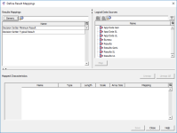
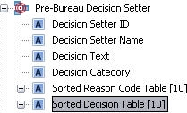

Merge Decision Setters in a system
In a system where multiple Decision Setters are used at different points within the decisioning process, if a consolidated overall decision is required, then the individual Decision Results Tables, need to be merged together into a table producing the final top ranking decision. Within the Derived Data Script component there is a specific function called Merge Tables. This function has been created to enable the user to merge multiple Decision Result Tables.
The Merge Tables function takes in the results from two Decision Tables, sorts them according to the priority of the categories defined in the Decision Set and outputs the top ranking decisions to the output table. If more than one Reason Code is associated with a Decision Category then the codes are kept in the same order that they appeared in the input tables but precedence is given to input table 1. The top ranking Decision Category, Decision Text and Reason Code will be returned to the characteristics that have been mapped to the <decision category> field, the <decision text> field and the <reason code table> field. Providing the user with not only all the Decisions that have been triggered, but also the Decision Category, Decision Text and Reason Code of the highest priority Decision.
| Input Table 1 | Input Table 2 | Priority Order (Decision Set) | Output Table |
|---|---|---|---|
|
Decline ARR1 |
Refer BBR2 |
Decline |
Decline ARR1 |
|
Refer BBR1 |
|
Accept |
Refer BBR1 |
|
Refer BBR3 |
|
Refer |
Refer BBR3 |
|
Accept ARR2 |
|
|
Refer BBR2 |
|
|
|
|
Accept ARR2 |
The three Decision Tables used in the merge are selected by the user from the Logical Data Source and will be created as a result of defining the mappings required for the Decision Setters in the Decision Process Flow. The output table is not created automatically within the merge process so will need to be created either manually or using an existing Decision Setter.
The two Decision Tables used in the merge are selected by the user from the Logical Data Source and will be created as a result of defining the mappings required for the Decision Setters in the Decision Process Flow.
To manually create the output Decision Table
- With the Logical Data Source editor open and the required results Logical Data Source in view, right click on the last row and select Add Row.
- Type Final Decision Table as the "Name" of the characteristic.
- Select "String" as the Type.
- Type 256 as the "Length".
- In the array size either leave the size as *, which will cause a dynamic array to be created or type the number you require to create a static array.
The table required for the Merge Tables function will be created.
To create an output Decision Table using an existing mapping contained in a Decision Setter process
- With the Decision Process Flow editor open, right click on the Decision Setter and select Results Mapping.
- The Define Result Mappings dialog opens.
- Click on the Typical Result in the Results Mappings to map to the Logical Data Source.
- Click on the Logical Data Source where the Decision Setter Results Mappings already exist, (Results in this example), and click the Map button.
- Use the "Name" column to rename the table so it can be identified as the output table.
- For the Sorted Reason Code Table characteristic, in the "Array Size" column, either leave the size as *, which will cause a dynamic array to be created or type the number you require to create a static array.
- For the Sorted Decision Table characteristic, in the "Array Size" column, either leave the size as *, which will cause a dynamic array to be created or type the number you require to create a static array.
- Click Save to save the changes. You have created the output table which will be used in the Merge Tables function. This table is where the merged decision result will be returned.
- Click the Unmap All button to clear the data from the Mapped Characteristics table. This does not unmap the data from the Logical Data Source. The output table will still be available for selection in the Merge Tables function of the Derived Data Script.
- Repeat steps 4-7, but rename the table so it can be identified as a results table (Results Table Two, for example).
- Click the Close button to close the dialog.

The Mapped Characteristics table populates with the characteristics from the Logical Data Source.
You will now need to unmap this output table from the Decision Setter process and map the appropriate results table to this process. To do this:
| The three Decision Tables used in the MergeTable function are selected by the user from the Logical Data Source and will be created as a result of defining the mappings required for the Decision Setters in the Decision Process Flow. |
The table required for the MergeTable function will be created and the correct Decision Setter Results Mappings will be assigned to the Decision setter process.
Within the Derived Data Script component there is a specific function called Merge Tables. This function has been created to enable the user to merge multiple Decision Result Tables.
To merge Decision Tables
- From the Explorer window, right click at the required folder level and select Add component.
| You will only be able to add a component type that has been allowed for the selected folder. If it is not allowed it will not be listed and therefore cannot be selected. |
- Select Derived Data Script.
- In the Create Component dialog enter the name of the Derived Data Script and click OK.
- The Derived Data Script name will be listed in the Explorer window under the selected folder level. The component is identified by the
 icon.
icon. - Right click on the Derived Data Script and select Open.
The Derived Data Script editor will open. - In the Palette window, click on the Expand + button to expand Functions - Other.
- Drag and drop the Merge Tables function onto the script editor.

| Parameter or Return | Data Type | Description | Mandatory /Optional |
|---|---|---|---|
|
<table1> |
String array |
A reference to a String array, which contains the values of the first decision results table. |
Mandatory |
|
<table2> |
String array |
A reference to a String array, which contains the values of the second decision results table. |
Mandatory |
|
<decision set> |
String or String array |
A reference to the name of a Decision Set component that is used to sort the input tables in decision category priority order. A String array may also be specified for testing purposes. |
Mandatory |
|
<output table> |
String array |
A reference to a String array, which is used by the function to store the merge of < |
Mandatory |
|
<decision category> |
String |
A reference to a String characteristic which is used by the function to store the name of the highest priority decision category, obtained from the first row of the < |
Optional |
|
<decision text> |
String |
A reference to a String characteristic which is used by the function to store the description of the highest priority decision category, obtained from the first row of the < |
Optional |
|
<reason code table> |
String array |
A reference to a String array which is used by the function to store the reason codes, obtained from the < |
Optional |
|
If you wish the Merge Tables function to return details on the highest priority decision returned, the three optional parameters need to be mapped too. |
- In the Resources window, expand Logical Data Source and locate the Logical Data Source that contains the Decision Tables.
- Drag and drop the Logical Data Source onto the script editor just before <table1>.
The Select Characteristic dialog will open. - Expand the Logical Data Source to list all the characteristics contained in it and locate the Decision Table that you wish to use as <table1>.
- Select the table you require.

- Click OK.
The table will be added to the script. - Delete <table1> from the script.
- Repeat steps 9 -13 to add table 2 to the script.
- In the Resources window expand Decision Set and locate the Decision Set you require.
- Drag and drop the Decision Set just before <decision set> in the script.
- Delete <decision set> from the script.
- Repeat steps 9 -13 to add the output table to the script.
- Using the same Logical Data Source you used for the output table, repeat steps 9 -13 to add the Decision Category to the script.
- Repeat step 19 to add the Decision Text to the script.
- Repeat step 19 to add the Reason Code Table to the script.
- Click on the
 icon to check the validity of the script.
icon to check the validity of the script.
The Compilation dialog is displayed. - Click OK to close the dialog.

{kind=link}
{kind=link}
{kind=link}
{kind=link}
The Merge Table Derived Data Script can now be used in a Decision Process Flow to obtain an overall decision.
|
The Merge Table Derived Data Script can be used separately from Decision Setters in a Decision Process Flow. If this occurs and data is added manually or modified then the data will need to be padded in the following way: <20 character name><20 character description><10 character reason code> Failure to do this will cause the Decision Agent to generate an error, for example: An error occurred executing Merge Tables, the length of input table <name of table> is 49 when it is required to be 50. An error occurred executing Derived Data <name of script>. |